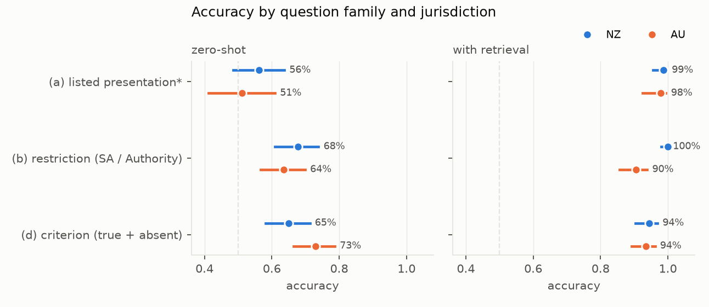
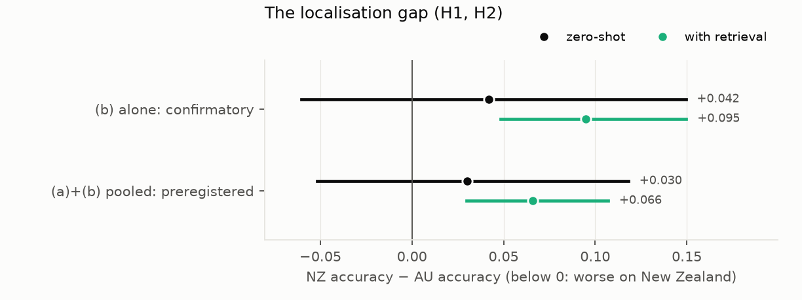
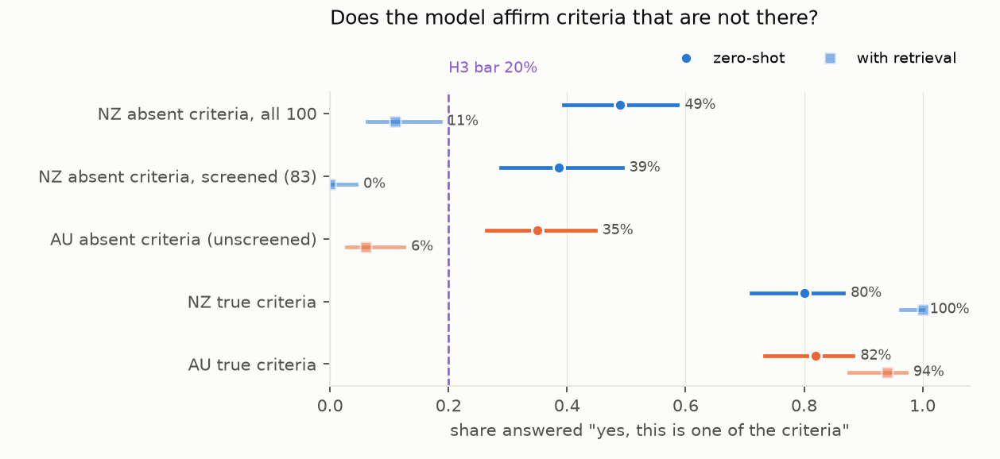

Verdict: Inconclusive on the localisation gap; fabrication Supported.
- H1 (New Zealand answered worse than Australia): Inconclusive.
- The test uses the restriction family (b), as fixed in D5 before any output was read. Zero-shot accuracy is 67.7% for New Zealand and 63.5% for Australia: a gap of +4.2 points (95% CI −6.0 to +14.9).
- The preregistered pooled analysis of families (a) and (b) agrees: +3.0 points (−5.2 to +11.8).
- The point estimates favour New Zealand. No gap against it was detected.
- H2 (retrieval closes the gap): Inconclusive, because the plan only evaluates it when H1 is Supported.
- H3 (the model affirms invented criteria for at least 20% of NZ items): Supported.
- Zero-shot, the model affirms 49 of 100 NZ criteria that are not in the chemical's Special Authority (95% CI 39–59%).
- Among the 83 that a hand screen found clearly distinct from the chemical's own criteria, it affirms 32 (39%, 29–49%).
- For Australia the rate is 35% (26–45%), on items that were not screened.
What else the data show:
- Zero-shot answers are dominated by a response bias, not knowledge.
- Restriction questions (b). The model says "approval required" for 60% of NZ and 68% of AU presentations that need none. Accuracy is high on the "yes" items only.
- Listing questions (a). It barely discriminates listed from unlisted presentations: for Australia it says "listed" to 75% of listed and 72% of unlisted ones. Family (a)'s answer key also failed its check (D5), so these numbers are descriptive.
- Retrieval almost solves the task in both countries. With three passages from the country's own document,
accuracy is 90–100% in every family. Fabrication of NZ criteria drops from 39% to 0% on the screened items.
- But the passages are rendered from the same structured data as the answer key. So this measures reading comprehension, not real-world document lookup.
- Rewording changes answers. Asking 100 items again in different words changes 23% of the answers.
- The benchmark was harder to build than to run.
- The plan's 200-item answer-key check passed overall (2.0% wrong) but hid two weak cells.
- Family (a) negatives were 8% wrong.
- The New Zealand counterfactual criteria: a full screen found 17 of 100 restating one of the chemical's real criteria in other words. The model affirmed all 17.
In plain terms
People increasingly ask chatbots whether a medicine is funded and who qualifies. We wanted to know whether a typical open AI model answers these questions worse for New Zealand than for Australia, whose scheme is larger and more written about.
We built about a thousand yes/no questions from each country's official funding data and asked them of one model. The questions were of three kinds: is this tablet funded, does it need special approval, and is this one of the eligibility rules.
We found no sign that New Zealand questions were answered worse. If anything they were answered slightly better, but not by a clear margin. The bigger problem was the same in both countries: the model mostly guessed. It tended to say "approval needed" whether or not it was. It could barely tell a funded tablet from an unfunded one.
It also often agreed that a made-up eligibility rule was real. We took a genuine rule from a similar medicine and asked whether it applied. The model said yes about 4 times in 10 for New Zealand, and about 1 time in 3 for Australia.
When we gave the model the relevant text from the funding document, it answered almost everything correctly. That text came straight from the same data we marked the answers against, so this is the easiest possible version of "looking it up".
The practical lesson: for funding questions, a model like this should be made to read the actual Schedule entry, not answer from memory. This is one model, and it says nothing about clinical advice.
What was asked
General-purpose language models are increasingly asked practical questions about medicines, including whether a medicine is funded and what a patient must meet to get it. Funding rules are national. New Zealand's Pharmaceutical Schedule is far smaller than Australia's Pharmaceutical Benefits Scheme (PBS), and far less written about. A model trained mostly on international text might know Australia's rules better.
The study asks three preregistered questions (plan.md) of one locally served open model, Nemotron 3 Nano Omni:
- H1 (localisation gap): is zero-shot accuracy lower on New Zealand questions than on matched Australian ones?
- H2 (retrieval closes it): if so, does giving the model three passages from the jurisdiction's own document close at least half the gap?
- H3 (fabrication): does the model affirm a plausible but absent eligibility criterion for at least 20% of New Zealand counterfactual items?
What was already known
The novelty search (2026-10-18) found one close relative: a Korean benchmark of reimbursement eligibility for anticancer drugs (JMIR 2026), in which models filled information gaps rather than abstain. No benchmark of New Zealand or Australian funding rules was found.
How it was done
Sources. - New Zealand. The Pharmac Schedule XML, Community section, October 2026 for the answers and November 2025 for the stability rule. - Australia. The PBS API v3 (public key), General Schedule items, restrictions and prescribing texts for October 2026 (schedule 4751), and November 2025 (the API's earliest) for the stability rule. - Chemicals are matched across the two by normalised INN name; only the 201 chemicals present in both are used. - An item's answer must be the same in both editions of its jurisdiction.
Question families (code/generate.py), each a yes/no question with a key from the structured data:
- (a) Listed presentation. "Is [chemical strength form] listed …?" Single-ingredient tablets and capsules only.
Negatives are presentations listed in the other jurisdiction but not in this one. NZ 80 yes / 80 no; AU 47 / 47.
- (b) Restriction. "Does subsidy of [presentation] require a Special Authority / an authority prescription?"
NZ 95 yes / 100 no; AU 100 / 100.
- (d) Criterion. "Under the criteria for [chemical], is '[sentence]' one of the criteria?" 100 true criteria
(the chemical's own) and 100 counterfactuals (a sentence from another chemical's restriction in the same ATC level-2
group, absent from this chemical's text by normalised string match) per jurisdiction.
- 1,049 items in all, at most 3 per chemical per family.
The answer-key check. 200 random items were checked by hand against sources the generator did not parse: the Schedule PDF for New Zealand and the raw PBS API records for Australia (D3). - Round 1: 9 of 200 wrong (4.5%), but 7 of the 29 family (a) negatives. The plan's one allowed fix was applied (D4) and the items regenerated. - Round 2 (a fresh 200): 4 of 200 wrong (2.0%), passing the plan's 5% bar. But 2 of 24 family (a) negatives were wrong, failing the stricter bar D4 set for that cell, and 2 of 31 counterfactuals restated one of the chemical's own criteria in other words. - Consequences, fixed before any model output (D5): - family (a) is descriptive only; - H1 and H2 are decided on family (b), with the preregistered pooled (a)+(b) analysis reported alongside; - all 100 NZ counterfactuals were screened by hand: 17 overlap the chemical's own criteria (12 equivalent, 5 overlapping). H3 is tested on all 100 and on the 83 distinct ones, and is decided only if both agree.
Model runs (code/run.py). Nemotron 3 Nano Omni on the lab's local vLLM server, temperature 0, JSON-schema
answers (yes / no, plus "not stated" when abstention is offered), up to 16,384 tokens, under three conditions:
- zero-shot: the question alone;
- retrieval: the question with the top 3 passages from a BM25 index of the jurisdiction's own document (one
passage per chemical, rendering its listed presentations, restriction flag and criteria);
- retrieval with abstention.
- A paraphrase check re-asks 100 random items zero-shot in different words.
Analysis (code/analysis.py). Exact-match accuracy. The NZ − AU gap uses a chemical-cluster bootstrap (2,000
resamples). Fabrication rates use Wilson intervals.
Results
Accuracy (results/tables/accuracy.csv, results/figures/F1_accuracy.png)
| family | NZ zero-shot | AU zero-shot | NZ retrieval | AU retrieval |
|---|---|---|---|---|
| (a) listed presentation* | 56.3% (160) | 51.1% (94) | 98.8% | 97.9% |
| (b) restriction | 67.7% (195) | 63.5% (200) | 100% | 90.5% |
| (d) criterion, true and absent | 65.0% (200) | 73.0% (200) | 94.5% | 93.5% |
*Descriptive only: family (a)'s key failed its check on negatives (D5).
- Errors. Five of the 3,247 calls returned no answer after one retry. As preregistered, they are scored as incorrect.
- Retrieval misses. The Australian restriction misses (19 "yes" items answered "no") concentrate in oncology and immunology drugs with long restriction texts. The cause was not investigated.


H1 and H2: the localisation gap (results/tables/primary.json, results/figures/F2_gap.png)
| NZ − AU, zero-shot | NZ − AU, retrieval | H1 | |
|---|---|---|---|
| (b) alone: confirmatory (170 chemicals) | +4.2 points (−6.0 to +14.9) | +9.5 (+4.8 to +15.0) | Inconclusive |
| (a)+(b) pooled: preregistered (184 chemicals) | +3.0 (−5.2 to +11.8) | +6.6 (+3.0 to +10.7) | Inconclusive |
- H1. Neither interval excludes zero, so H1 is Inconclusive under both analyses.
- Its Supported condition, an upper bound below 0, is far from met: the data lean the other way.
- H1 could not be Refuted either, because the lower bounds are below zero.
- H2 is evaluated only if H1 is Supported, so it is Inconclusive.
- With retrieval, New Zealand comes out ahead. NZ restriction answers are perfect, and the Australian ones miss 19 approval-required items.


H3: affirming criteria that are not there (results/figures/F3_fabrication.png)
| criteria shown | zero-shot "yes" | with retrieval |
|---|---|---|
| NZ absent, all 100 (preregistered) | 49% (39–59%) | 11% |
| NZ absent, screened 83 (D5) | 39% (29–49%) | 0% |
| NZ absent, the 17 that overlap own criteria | 17 of 17 | 11 of 17 |
| AU absent, unscreened 100 | 35% (26–45%) | 6% |
| NZ true criteria (controls) | 80% | 100% |
| AU true criteria (controls) | 82% | 94% |
- H3 is Supported. Both Wilson lower bounds are above 20%: 39% on all items and 29% on the screened ones.
- The control rows show the source. Affirming true criteria 80% of the time and absent ones 39–49% of the time is a yes-leaning model with some, but limited, knowledge of the rules.
- The screen worked as intended. Every one of the 17 overlapping NZ items was affirmed. Without the screen, the fabrication rate would be overstated by about 10 points.
- The AU counterfactuals were not screened. If they overlap as often as the NZ ones did, the AU rate is similarly overstated.


Response bias, abstention and wording
Yes-rates, zero-shot. A model with no knowledge would show the same rate in both columns.
| yes when truly "yes" | yes when truly "no" | |
|---|---|---|
| (a) NZ | 45% | 33% |
| (a) AU | 75% | 72% |
| (b) NZ | 97% | 60% |
| (b) AU | 95% | 68% |
| (d) NZ | 80% | 49% |
| (d) AU | 82% | 35% |
- Accuracy comparisons between countries mix knowledge and bias.
- In family (a), the model leans to "not listed" for New Zealand and to "listed" for Australia.
- So family (a)'s NZ advantage reflects how the questions are balanced, not knowledge.
- Abstention. When "not stated" is allowed alongside retrieval, the model uses it mostly where the passages
genuinely lack the answer:
- 79–98% of family (a) negatives;
- 69–88% of family (d) negatives.
When it does answer, it is right 97% (NZ) and 98% (AU) of the time. - Paraphrase. Re-asking 100 random items zero-shot in different words gives the same answer for 77.
What this does and does not show
- One model. These results describe Nemotron 3 Nano Omni at temperature 0 with fixed prompts, not language models in general. Larger or newer models may know these rules better, or show a gap this one does not.
- No New Zealand penalty was detected, but none was ruled out. The confirmatory interval runs from 6 points worse for New Zealand to 15 points better.
- Accuracy mixes knowledge with response bias. The model's "yes" habit sets much of each accuracy figure. A benchmark with a different yes/no balance would give different accuracies with the same model.
- The answer keys are the structured data.
- The Schedule XML and the PBS API were checked against the PDF and the raw API records.
- Family (a) failed that check, and the NZ counterfactuals needed a full hand screen. The AU counterfactuals were not screened.
- Retrieval here is the best case. The passages are rendered from the same data as the key, and BM25 found the right chemical most of the time. A real deployment that retrieves from the published PDF or website would do worse.
- Training staleness applies to both countries. The stability rule removes listing changes within the 11 months before October 2026, not older ones.
- Scope.
- Single-ingredient tablets and capsules for families (a) and (b).
- The NZ Community section and the PBS General Schedule.
- The 201 chemicals funded in both countries.
- No clinical advice was evaluated. These are facts about funding rules.
Process and deviations
- Preregistration. The plan (
plan.md) was committed at 6bd3e3c, before any item was generated or model queried. - D1: generator details fixed before generation. These include the November 2025 stability edition (the PBS API's earliest), tablets and capsules only, and the AU authority definition (benefit A or S).
- D2: family (a) balanced within each jurisdiction.
- D3: the evidence used for the AU half of the key check is the raw API records, because the PBS website is rendered by JavaScript.
- D4: the round-1 key check found generator bugs (units, separators, release labels, wafers, ion-only names, generic counterfactuals). The plan's one fix was applied, and a fresh 200 was drawn.
- D5: round 2 passed overall but failed the D4 bar for family (a) negatives.
- Family (a) became descriptive, and H1 and H2 were decided on family (b).
- The NZ counterfactual screen was added for H3.
- The model runs started after D5 was committed (17:56). The screen (0cc4cba), the analysis code implementing D5 (b405223) and the figure code (6f0063a) were committed while the runs were in progress, before any output was opened.
- Errors. Five calls failed after a retry and are scored as incorrect, as preregistered.
Reproducing it
code/fetch.py (needs the public PBS key in PBS_KEY), code/generate.py, code/validate.py 2, code/run.py,
code/analysis.py, code/figures.py.
- The answer-key checks are in
results/tables/key_validation_round{1,2}.{csv,json}, and the NZ counterfactual screen inresults/tables/nz_counterfactual_screen.csv. - The model is served by vLLM on localhost:8000 as
nemotron_3_nano_omni. - Results are in
results/tables/primary.jsonandresults/tables/accuracy.csv. The raw answers are indata/runs.jsonl.